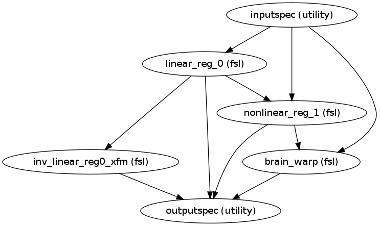
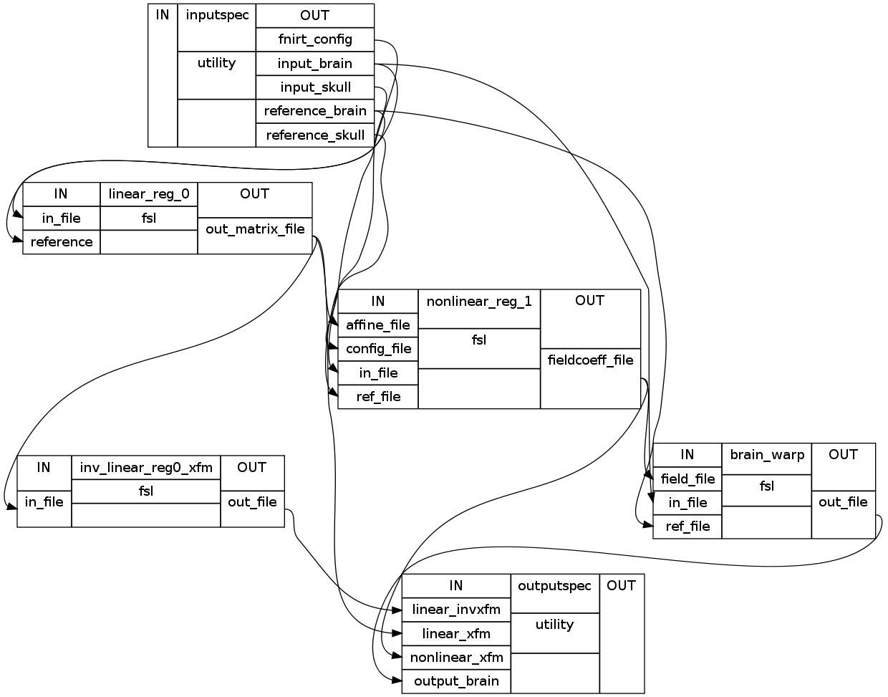

Performs non-linear registration of an input file to a reference file.
| Parameters : | name : string, optional
|
|---|---|
| Returns : | nonlinear_register : nipype.pipeline.engine.Workflow |
Notes
Workflow Inputs:
inputspec.input : string (nifti file)
File to be normalized (registered)
inputspec.reference : string (nifti file)
Target file to normalize to
inputspec.fnirt_config : string (fsl fnirt config file)
Configuration file containing parameters that can be specified in fnirt
Workflow Outputs:
outputspec.output : string (nifti file)
Normalizion of input file
outputspec.linear_xfm : string (.mat file)
Affine matrix of linear transformation
outputspec.linear_invxfm : string
Inverse of affine matrix of linear transformation
outputspec.nonlinear_xfm : string
Nonlinear field coefficients file of nonlinear transformation
Registration Procedure:
Workflow Graph:
Detailed Workflow Graph:
Registers a functional scan in native space to MNI standard space. This is meant to be used after create_nonlinear_register() has been run and relies on some of it’s outputs.
| Parameters : | name : string, optional
|
|---|---|
| Returns : | register_func_to_mni : nipype.pipeline.engine.Workflow |
Notes
Workflow Inputs:
inputspec.func : string (nifti file)
Input functional scan to be registered to MNI space
inputspec.mni : string (nifti file)
Reference MNI file
inputspec.anat : string (nifti file)
Corresponding anatomical scan of subject
inputspec.anat_to_mni_xfm : string (warp file)
Corresponding anatomical native space to MNI warp file
Workflow Outputs:
outputspec.func_to_anat_xfm : string (mat file)
Affine transformation from functional to anatomical native space
outputspec.mni_func : string (nifti file)
Functional scan registered to MNI standard space
Workflow Graph:
Detailed Workflow Graph: